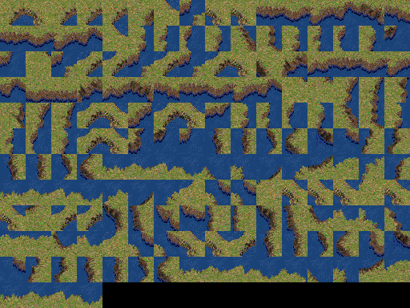

Seven Kingdoms: Ancient Adversaries — coste SG originali
180 tasselli 32×32 indicizzati originali · PAL_STD.RES · 7KAA GPLv2 · pixel sorgente, mappa JS dimostrativa.
Atlas originale · scala 1×

Tutti i record di TERRAIN1.RES con tipologie rappresentante e secondaria mare/erba. Ordinati per ID originale.
Quattordici forme di costa · scala 3×
Le forme vengono selezionate dagli effettivi codici NW/NE/SW/SE. Questo dimostra la disponibilità dei pixel originali, non il matching con le quote e con il generatore 7KAA.
Apri il gioco con coste · Confronta senza coste · Manifest sorgente